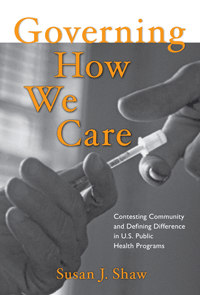

<body bgcolor="#FFFFFF" text="#000000" link="#0000FF" vlink="#CC0000" alink="#CC0000"><center><hr width="350" size="1" align="center" noshade>An analysis of local struggles over community health as a window into governance, citizenship, and identity formation<hr width="350" size="1" align="center" noshade><p><a href="https://cdcshoppingcart.uchicago.edu/Cart/ChicagoBook.aspx?ISBN=9781439906828&&PRESS=temple" target="_top">Buy this book!</a> | <a href="https://cdcshoppingcart.uchicago.edu/Cart/Cart.aspx?PRESS=temple" target="_top">View Cart</a> | <a href="https://cdcshoppingcart.uchicago.edu/Cart/Cart.aspx?PRESS=temple" target="_top">Check Out</a></p><p></p></center><!--none//--><h1>Governing How We Care</h1>
<H2>Contesting Community and Defining Difference in U.S. Public Health Programs</H2>
<h3>Susan J. Shaw</h3>
<P>cloth 1-4399-0682-3 $85.50, Mar 12, <FONT COLOR=#990033>Available</FONT>
<br>paper 1-4399-0683-1 $29.95, Mar 12, <FONT COLOR=#990033>Available</FONT>
<br>Electronic Book 1-4399-0684-X $29.95 <FONT COLOR=#990033>Available</FONT>
<BR> 226 pp
6x9
3&nbsp;figures 5&nbsp;halftones
</P><BLOCKQUOTE><I>"In this important study, Susan Shaw invites us to reflect critically on how care is being ordered, organized, and provided to stigmatized social groups. Grounded in a rich ethnography and developed through a subtle analytic framing, Shaw’s book explores the powerful interplay between social differences, social inequalities, and social interventions. In the process, [Shaw] offers a compelling account of how public health governs publics, communities, and identities."</I>
<br>&#151<b>John Clarke</b>, Professor of Social Policy, Open University, UK<I></I></BLOCKQUOTE>
<P>As local governments and organizations assume more responsibility for ensuring the public health, identity politics play an increasing yet largely unexamined role in public and policy attitudes toward local problems. In <i>Governing How We Care</i>, medical anthropologist Susan J. Shaw examines the relationship between government and citizens, using case studies of needle exchange and Welfare-to-Work programs to illustrate the meanings of cultural difference, ethnicity, and inequality in health care.
Drawing on ethnographic research conducted over six years in a small New England city, Shaw presents critical perspectives on public health intervention efforts in the urban United States. She looks at online developments in health care and highlights the new concepts of community and forms of identity that emerge in our efforts to provide effective health care to diverse populations. <i>Governing How We Care</i> shows how community health programs both respond to and propel the citizenship claims of marginalized groups in an age of neoliberalism.
<BR>&nbsp;<h2>Excerpt</h2><P>Excerpt available at <a href="http://www.temple.edu/tempress">www.temple.edu/tempress</a></p>
<BR>&nbsp;<h2>Reviews</h2>
<p><i>"[T]his is a thoughtful contribution to relationships between government, community, and public health.... Recommended."</i> <br>&#151<b><i>Choice</i></b>
<p><i>"Shaw offers a sophisticated critical examination of community health efforts in the United States.... Shaw’s book is interesting and provides an insightful critique of public health programming in the United States. She demonstrates both the contested nature of what these program[s] do and the definitions of the communities that they are intended to serve. The book will no doubt be of interest to sociologists, anthropologists, and other social scientists interested in societal responses to health problems. It is well written and deeply grounded in contemporary social theory and careful analysis of rich and varied ethnographic data...social theorists and ethnographers will find the book a valuable contribution to the field.... Shaw’s critique is clear and significant."</i><br>&#151<b><i>Sociology of Health & Illness</i></b>
<p><i>"This book is a must-read for policy makers, researchers, health care administrators, public officials, and others who are interested in the complex issues surrounding health care delivery in the United States.... [Shaw] explores the risks and norms of drug prevention research... [Her] illumination of this phenomenon in the injection drug user population provides a challenging perspective to the field.... </i>Governing How We Care<i> provides a concretely rooted lesson about the experience of vulnerable populations in public health programs. Readers will gain valuable insight into programs that aim to correct short-term behavior and long-term behavior adaptations"</i> <br>&#151<b><i>Public Administration Review</i></b>
<p><i>"[Shaw] provides an insightful and detailed mapping of her work as an ethnographer and social scientist, conducting research and working for a federally funded study on HIV risk and needle use.... Public health practitioners, social workers, and professors in social sciences and public health and their graduate students will appreciate the detailed analysis of the policies, programs, and practices Shaw employs to conduct this community-based participatory research project." </i><br>&#151<b><i>American Ethnologist</i></b>
<p><i> "In many ways, </i>Governing How We Care<i> is not a traditional ethnography, and the reader is better for that.... Shaw has written an engaging book.... [She] skillfully weaves an ethnographic account of two urban public health programs (a needle exchange and a welfare-to-work program in New England) alongside a more elegant theoretical engagement of the important questions guiding public health today.... This book is very important and makes a valuable contribution to our understanding of community health programs under the neoliberal state."</I><br>&#151<b><i>American Journal of Sociology</b></i>
<BR>&nbsp;<h2>Contents</h2><P>
<p>Acknowledgments
<p><b>Introduction</b>
<br>1. The Governmentality of Community Health</p>
<p><b>Part I: Technologies of Citizenship and Difference</b>
<br>2. Community Health Advocates: The Professionalization of “Like Helping Like”
<br>3. Neoliberalism at Work: Contemporary Scenarios of Governmental Reforms in Public Health and Social Work
<br>4. Technologies of Culturally Appropriate Health Care</p>
<p><b>Part II: Technologies of Prevention and Boundaries of Citizenship: Drug Use, Research, and Public Health</b>
<br>5. “I Always Use Bleach”: The Production and Circulation of Risk and Norms in Drug Research
<br>6. Syringe Exchange as a Practice of Governing</p>
<p>Conclusion
<br>References
<br>Index</p>
</P><BR>&nbsp;<H2>About the Author(s)</H2>
<P><b>Susan J. Shaw</b> is Associate Professor in the School of Anthropology at the University of Arizona.</P>
<BR><H2>Subject Categories</H2>
<p><A HREF="/tempress/health.html" TARGET="_top">Health and Health Policy</a>
<BR><A HREF="/tempress/anthropology.html" TARGET="_top">Anthropology</a>
<BR><A HREF="/tempress/sociology.html" TARGET="_top">Sociology</a>
</p>
<p align="center"><a href="https://cdcshoppingcart.uchicago.edu/Cart/ChicagoBook.aspx?ISBN=9781439906828&&PRESS=temple" target="_top">Buy this book!</a> | <a href="https://cdcshoppingcart.uchicago.edu/Cart/Cart.aspx?PRESS=temple" target="_top">View Cart</a> | <a href="https://cdcshoppingcart.uchicago.edu/Cart/Cart.aspx?PRESS=temple" target="_top">Check Out</a></p><p><font face="Arial" size="1"><a href="copyright.html" onMouseOver="window.status='Web Copyright Policy';return true;" onMouseOut="window.status=''" title="Web Copyright Policy">&copy;</a> 2015 <a href="http://www.temple.edu" target="new" onMouseOver="window.status='Link to Temple University home page';return true;" onMouseOut="window.status=''" title="Link to Temple University home page">Temple University</a>. All Rights Reserved. http://www.temple.edu/tempress/titles/2150_reg.html</font></p>